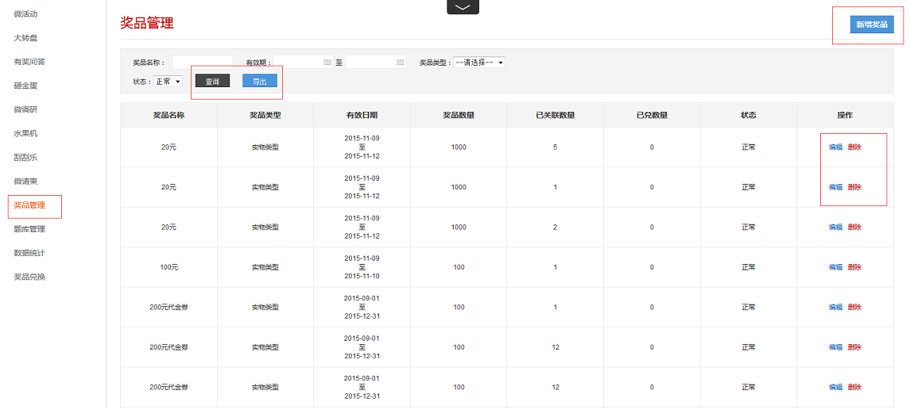
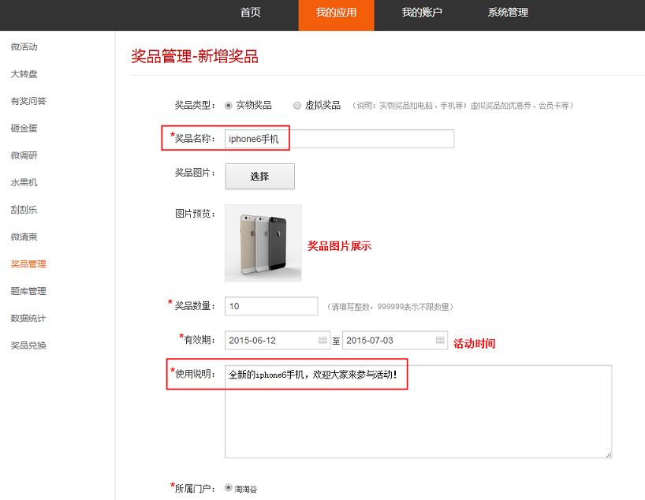
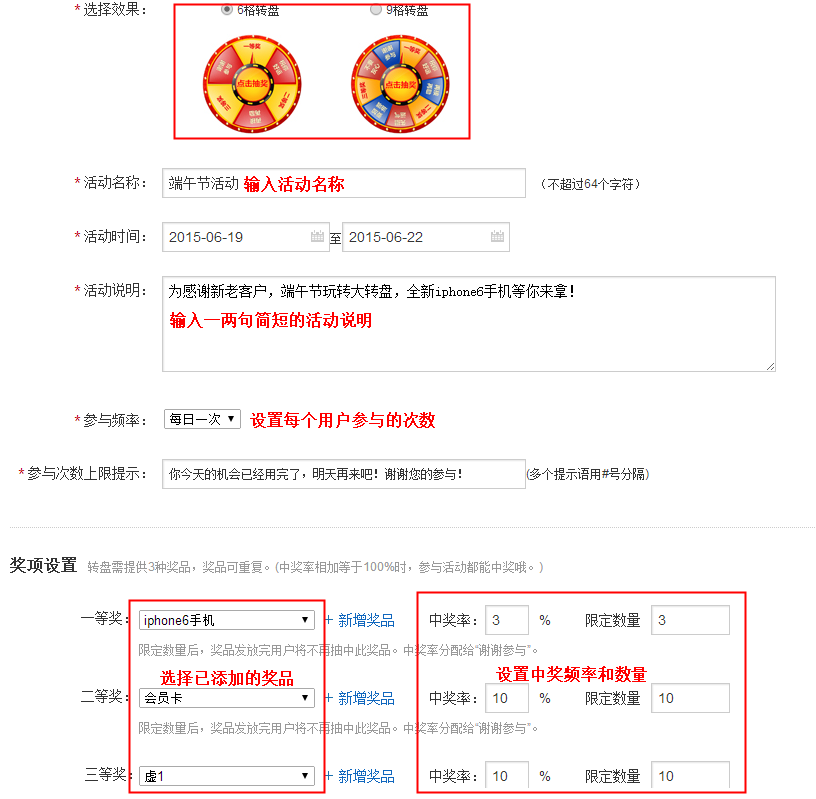
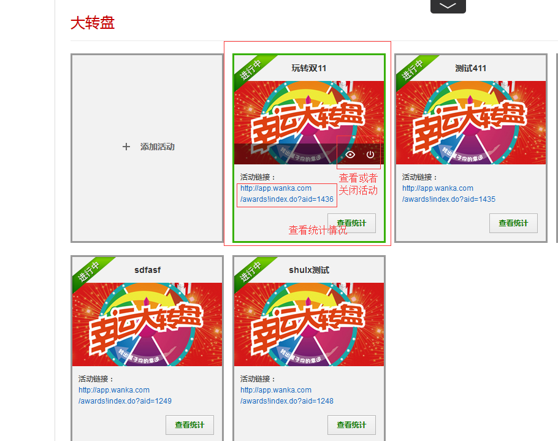

活动添加需在商户后台PC端进行设置
1、添加奖品
添加活动前，都需要在“奖品管理”中添加奖品，“奖品管理”可查询、导出、编辑或删除已有的奖品，如需新增，点击【新增奖品】按钮即可。如下图所示：

新增奖品，选择奖品类型后，输入对应的奖品信息，填写完毕点击保存即可。(一个活动最少设置两到三个奖品)

2、活动详细设置
添加奖品完成后，打开微活动，点击幸运大转盘中的【新建活动】进入活动设置页面。按要求填写下相对应的信息，填写完毕点击保存，设置完成。如下图所示：

3、活动设置完成
活动设置完成后，返回到"大转盘的页面"，可对刚刚添加完成的活动进行查看或关闭等操作，生成的活动链接可以复制。如下图所示：
